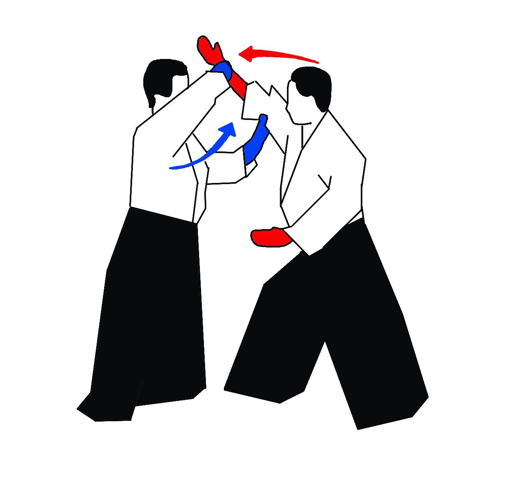

1. El Uke da un paso adelante a la vez que ataca intentando golpear a él Tori con su brazo derecho; mientras que el Tori avanza y agarra con ambas manos (izquierdo abajo y derecho arriba) el brazo de su oponente.